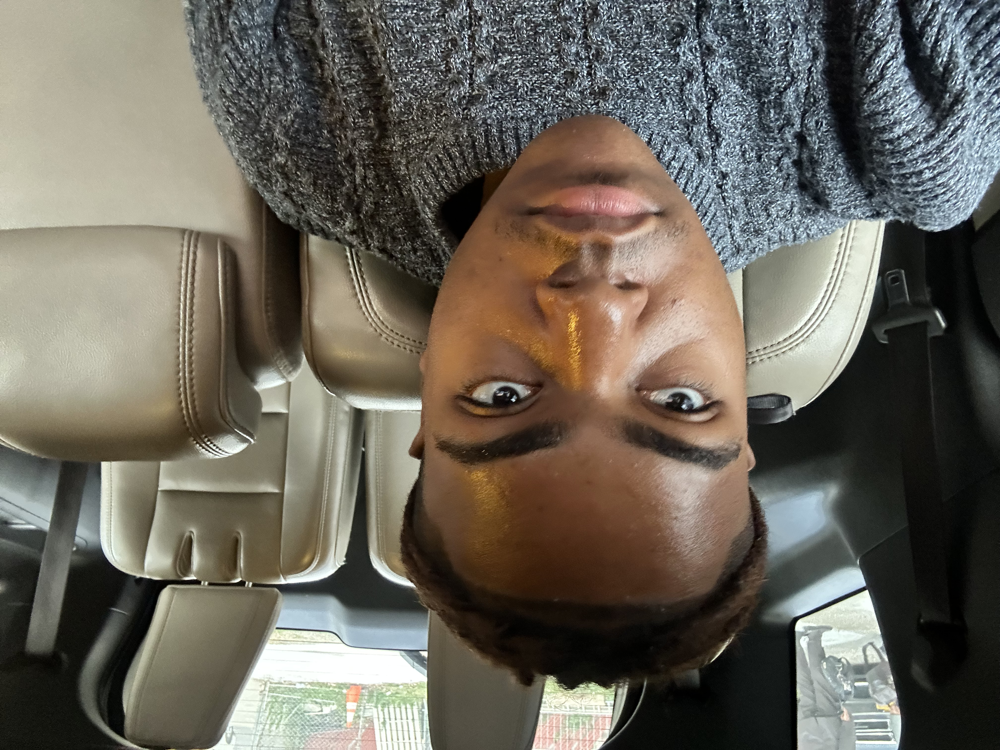

I’m interested in journalism and documenting people's stories along with the happening of today's world. I strive to find the pulse of the present by elevating individual voices above the noise of the news cycle. By grounding global events in personal narratives, I aim to create a more intimate and enduring record of our time. I believe that every story can hekp buuld empathy between groups that may feel the divided and isolated. My goal is to capture the truth of the human experience as it unfolds in real-time.
